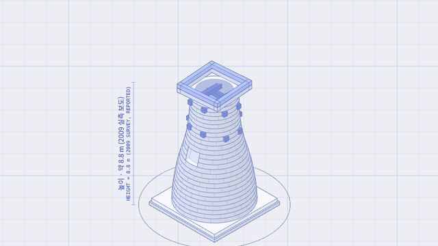
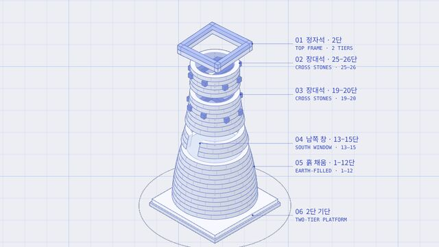
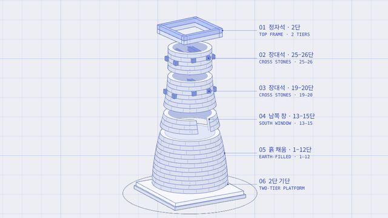
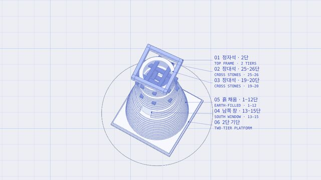
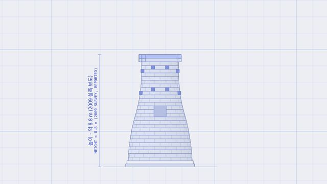
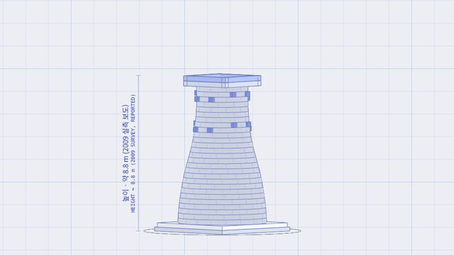
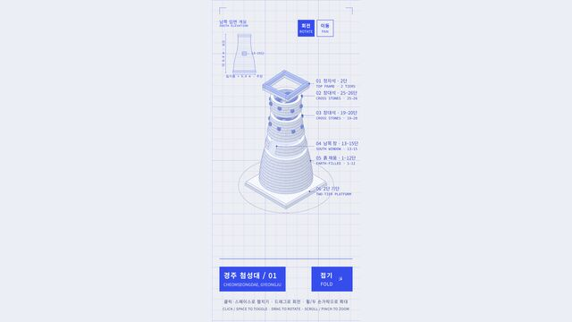

작업 흐름
- 입력
- 문화유산 하나 (탑, 문루, 다리, 석등, 천문대 …)
- 조사
- 실사진·실측 도면·문헌, 출처와 상태를 적은 근거 장부, 형태표
- 설계
- 그 대상만의 부재·연결·펼침 순서·주석 위치, 모형과 입면도가 함께 쓰는 매개변수
- 검사
- Node 불변식 검사, Chromium 스틸(데스크톱·휴대폰), 사진 각도 비교, 주석 겹침 검사
- 출력
- 폰트까지 넣은 오프라인 HTML 한 파일 (한국어 약 0.47 MB)
cd heritage-blueprint/examples/cheomseongdae
node make-inset.mjs
python3 ../../scripts/build.py scene.json out/cheomseongdae.html --force
node ../../scripts/verify.cjs out/cheomseongdae.html
node ../../scripts/check.mjs out/cheomseongdae.html --angles ne:45:3,s:-90:0요구 사항: Python 3.9+, Node 18+, Playwright + Chromium(검사용). 결과 페이지는 WebGL 브라우저만 있으면 됩니다. 단계별 순서는 SKILL.md에 있습니다.
샘플
원본에 없던 새 주제 「경주 첨성대」를 브리프 → 근거 장부 → 새 형상 → 검사 순서로 만든 모형의 스틸입니다. 카드를 누르면 라이브 데모가 열립니다.
경주 첨성대 국보 · 27단 · 약 8.8 m (보도)
ICOMOS–IAU 천문유산 주제 연구에 실린 국립문화재연구원 남쪽 입면도의 외곽선을 읽어 몸통 곡선을 만들고, 평면도의 3 m 축척 막대로 크기를 맞췄습니다.

합친 상태 · 기본 시점27단 몸통과 정자석
높이 자에는 보도값임을 적은 「약 8.8 m」

펼친 상태 · 2.85초속을 여섯 부분으로
흙 채움 → 창 → 빈 몸통의 장대석 → 정자석 순서로 오르는 구조

펼친 상태 · 남서쪽뚫린 남쪽 창
칠한 구멍이 아니라 문설주·벽 두께가 있는 실제 개구부

펼친 상태 · 위에서속의 井자 장대석
평면도대로 몸통 축에서 약 4.5° 돌아간 정자석

사진 각도 비교 · 남쪽입면도와 같은 방향
check.mjs --angles s:-90:0으로 찍어 실측 입면도 외곽선과 대조
사진 각도 비교 · 북동쪽공개 사진과 같은 방향
정자석이 몸통보다 넓게 나온 정도와 몸통의 좁아짐을 대조

휴대폰 · 390×844좁은 화면
가장 긴 주석 너비를 재서 주석 열을 화면 안으로 당김
실제 작품
이 스킬을 만든 출처와, 이 레포에서 새 주제로 만든 예제입니다. 원본의 「삼담인월」 예제와 녹화 영상은 저작권이 따로 있어 옮기지 않았습니다.
원본 작품 · 杭州地标 (항저우 랜드마크)삼담인월·공신교·단교·보숙탑·뇌봉탑·육화탑 여섯 모형을 한 페이지에hangzhou-landmarks.pages.dev
「경주 첨성대」새 주제 예제 · 6개 부분 · 근거 15항목 · 라이브 페이지heritage-blueprint/examples/cheomseongdae
원본 레포 · tanglele110-hash/heritage-blueprint-skill스킬의 출처 · MIT · @木渡川 (tanglele)github.com/tanglele110-hash/heritage-blueprint-skill
링크
- SKILL.md 워크플로
- 폴더 scripts · references · assets · examples
- README.md 빠른 시작
- references/BRIEF.md 주제 → 브리프, 스틸 검토 기준
- references/EVIDENCE.md 조사 순서, 근거 상태, 치수 대조표
- references/RUNTIME.md scene.json, geometry.js 계약, 언어 팩
- references/GEOMETRY-QA.md 접합부와 개구부 검사
- references/VISUAL-QA.md 고정 스타일, 조작, 검수
- references/GALLERY.md 여러 모형을 한 페이지로
- references/LESSONS.md 겪은 문제와 해결
- examples/cheomseongdae/evidence.json 첨성대 근거 장부